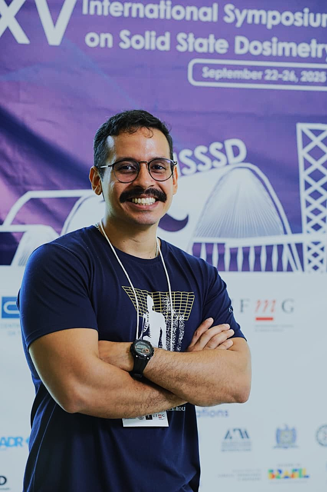

Desenvolvo estudos de simulação computacional, dosimetria e transporte de radiação para aplicações em física médica, radioterapia, braquiterapia e proteção radiológica.
Meu trabalho é baseado em métodos computacionais e simulações Monte Carlo, buscando transformar problemas complexos de transporte de radiação em análises técnicas, quantitativas e fundamentadas.
Sou Físico Médico, graduado pela Universidade Federal de Sergipe (UFS) em 2018, com Mestrado (2020) e Doutorado (2026) em Ciências e Técnicas Nucleares pela Universidade Federal de Minas Gerais (UFMG).
Minha trajetória acadêmica é concentrada na aplicação de métodos computacionais ao transporte de partículas e radiação, com experiência em dosimetria, microdosimetria, radiobiologia e simulações Monte Carlo. Também faço parte do MCMEG (Monte Carlo Modelling Expert Group), grupo dedicado ao desenvolvimento e à aplicação de métodos de Monte Carlo em modelagem e transporte de partículas e radiação.
Atuo com diferentes códigos e ferramentas de simulação, incluindo MCNP, PENELOPE, TOPAS e PHITS, além de desenvolvimento e análise computacional utilizando Python.
Essa experiência permite abordar diferentes problemas envolvendo blindagem, dosimetria, caracterização de feixes e transporte de radiação, adaptando a modelagem às necessidades de cada estudo.
Minha formação inclui trabalhos de pesquisa diretamente relacionados à simulação e dosimetria.
Mestrado
Metodologia para Modelar Computacionalmente um Sistema Padrão para Dosimetria Beta — desenvolvimento de uma metodologia computacional para a modelagem do sistema BSS2 para dosimetria beta.
Doutorado
Estudo In Silico sobre o Uso de Nanopartículas de Ouro em Protocolo de Braquiterapia — estudos computacionais envolvendo transporte de radiação, microdosimetria e radiobiologia, com aplicação na estimativa de curvas de sobrevivência celular.
O objetivo é oferecer simulações confiáveis, tecnicamente fundamentadas e adequadas a cada aplicação, fornecendo resultados que possam apoiar projetos, análises e tomadas de decisão relacionadas à radiação.

lucasfaraujo1@gmail.com